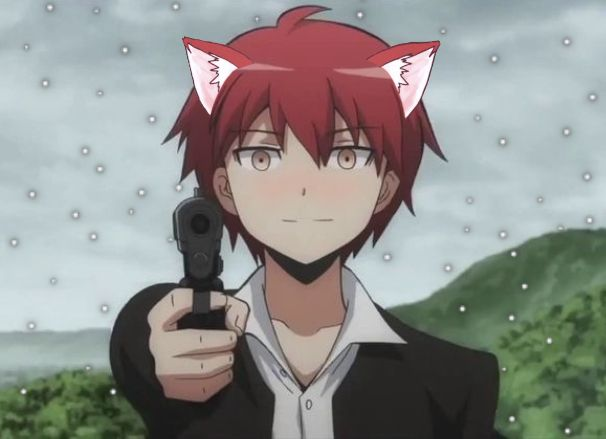

Karma Akabane (Assassination Classroom)

Karma Akabane is a student in Class 3-E of Kunugigaoka Middle School and one of the top assassins in the
class. He's known for his quick wit and clever mind, but he also has a bit of a sadistic streak and enjoys
causing chaos.